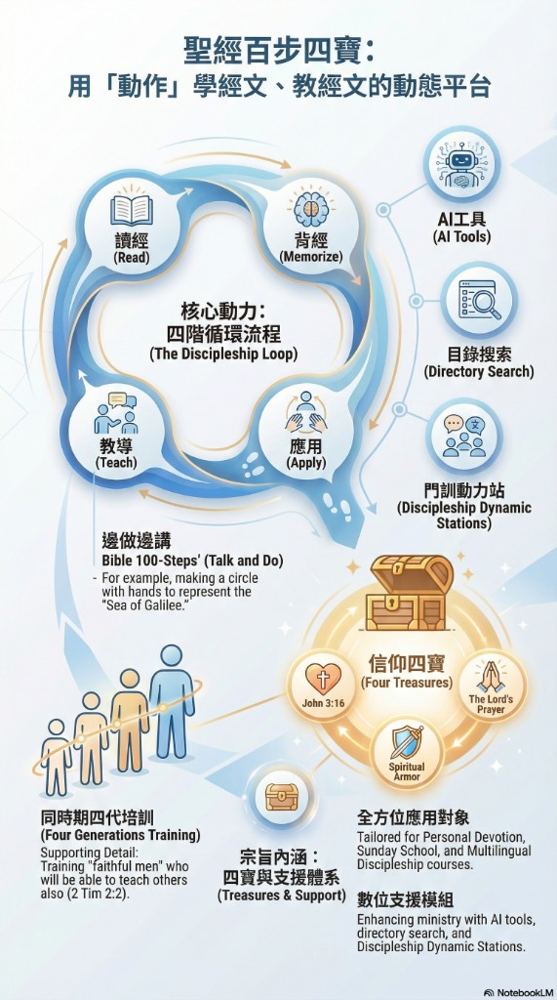

歡迎！這裡不是冷冰冰的後台，而是一棟手腳與大腦並行的教會生態：底下研讀聖經餵養生命；事工分為日常牧養（4F）與長執決策（5F）。請選一顆大按鈕開始，不必記工程代號。
Bible100 Action Edition · 100 Steps
用「動作」學經文、教經文 — 讀經 · 背經 · 應用 · 教導
Learn and teach Scripture through action: Read · Memorize · Apply · Teach
若已從上方 4F 大門進入，可略過此區。這裡保留從教材來的牧養橋與註冊入口。
「聖經動作版」把經文化為可做、可教的一步步：用身體與口說記住神的話，適合個人靈修、小組、主日學與門訓。
The Action Edition turns Scripture into steps you can do and teach — with body and voice.
無論你是學員或老師，這裡有舊約、新約與「四寶」等課程，依語言與程度選擇，可自學也可帶人一起做。

核心動力：讀經 → 背經 → 應用 → 教導 · 四寶與全方位應用